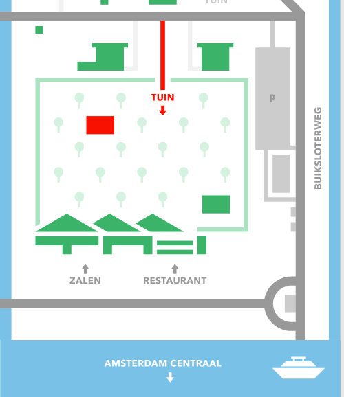

Je kunt ons vinden in de Tolhuistuin, net over 't IJ achter Amsterdam centraal. De tuin ligt achter restaurant THT, en de ingang is weer aan de achterkant van de tuin. Neem het pontje richting Buiksloterweg en loop voor 200 meter noordwaarts. Sla dan linksaf de Tolhuisweg in. De tuin is dan te vinden aan je linkerhand. Gebruik je Google Maps? Voer dan 'Tolhuisweg 3' in. Mocht dit nou allemaal misgaan - we zorgen vanaf de pont ook voor bordjes. Tot de 15e!